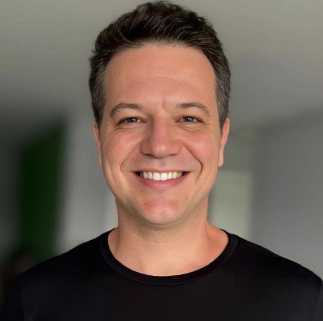
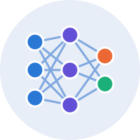
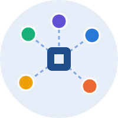

About
I am an Associate Professor in the Department of Computer Science (DCC) at the Federal University of Juiz de Fora (UFJF) and a permanent faculty member of the Graduate Program in Computer Science (PPGCC), where I serve as vice-coordinator. I hold a CNPq Research Productivity Fellowship (PQ-2) and serve as a Technical Editor of IEEE Network. I received my M.Sc. (2011) and D.Sc. (2016) in Computer Science from Universidade Federal Fluminense (UFF).
I lead research at the UFJF NetLab, with emphasis on computer networks and cybersecurity. My work has been funded by RNP, FINEP, FAPERJ, FAPEMIG, FAPESP, CNPq, PTI and TBE. I am a member of IEEE and SBC, and an elected member of the steering committee of the SBC Special Commission on Information Security (CESeg).
Last five years at a glance (2021–2026)
Research areas
5G/6G and O-RAN
Security of disaggregated radio access networks: xApp threats, policy conflicts in the Near-RT RIC, predictive handover and the 5G Core.
Network security and Zero Trust
Intrusion detection, continuous and context-aware authentication, biometrics and Zero Trust architectures for 5G, e-health and agentic AI.

AI applied to networks
Machine learning for traffic characterization, attack detection (e.g. Mirai, DoS), NWDAF analytics and resource management.
Identity and access management
Federated identity (eduroam, CAFe), attribute-based access control, IoT identity and non-human identities for AI agents.
Wi-Fi sensing and localization
Indoor localization with IEEE 802.11 FTM and Channel State Information (CSI), and Wi-Fi quality monitoring.

IoT and privacy
LoRa/LoRaWAN adaptation and key generation, privacy-preserving machine learning and anonymization of health data.
News
- 2026Results of the UFJF undergraduate research scholarship selection (BIC/PIBIC 2026/2027) are available here (in Portuguese).
- 2026Three M.Sc. dissertations defended at PPGCC/UFJF (M. Zancanella, R. M. Peixoto and S. Barroso).
- 2026Paper on inter-xApp policy conflicts in the O-RAN Near-RT RIC, related to my CNPq PQ project, published in IEEE Access (doi).
- 2026Program Committee Chair of SBSeg 2026.
- 2026Four papers at IEEE ISCC 2026 on Open RAN handover, 5G Core architectures and multimodal biometric authentication.
- 2025Paper on k-anonymity for healthcare data accepted in IEEE Transactions on Dependable and Secure Computing (doi).
Selected publications
- Inter-xApp Policy Conflicts in the O-RAN Near-RT RIC: Threat Modeling, Attack Characterization, and Lightweight Conflict-Aware Mitigation
- A New k-anonymity Method Based on Generalization First k-member Clustering for Healthcare Data
- Intelligent resource allocation in wireless networks: Predictive models for efficient access point management
- Identity management for Internet of Things: Concepts, challenges and opportunities
- Smart Line-of-Sight Identification in LoRaWAN NetworksBest Paper SIoT 2024
Prospective students
I supervise undergraduate (TCC, scientific initiation) and graduate (M.Sc.) students in computer networks and cybersecurity. See the list of suggested topics and feel free to contact me.